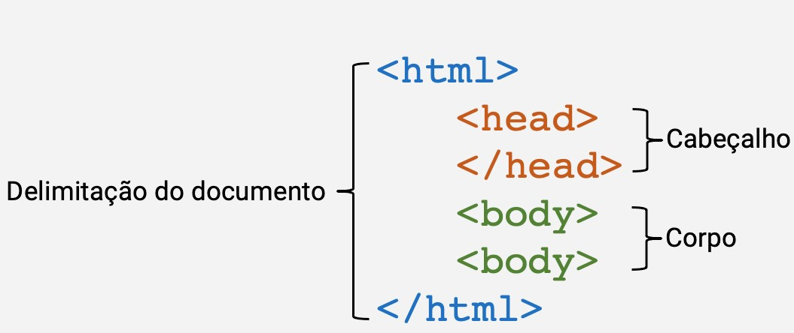

Disciplinas
FUNDAMENTOS DE WEB-T01-2024-1. Concluído
Materiais
Vídeo 1 - Fundamentos de Internet e Web - Linguagens de marcação para a WWW. sendProf° ministrante: Júlio Cezar Estrela. (UNIVESP)
Conteúdo
Linguagens de marcação para a WWW.
Roteiro:- Introdução.
- Navegação.
- Páginas.
- A linguagem HTML.
- Exemplo de página HTML.
- Ferramentas para criar páginas HTML.
- Primeira Página HTML.
- Tags HTML básicas.
- Tags de parágrafo.
- Tags de quebra.
- Tags de cabeçalho.
- Tabelas.
- Imagem.
- Áudio.
- Link.
- Componentes para a formatação do texto.
Introdução
- Internet e WWW
- Vasta rede global de computadores conectados entre si por meio das redes de comunicação existentes.
- Para conectar-se a Internet em geral precisamos:
- Computador.
- Provedor (ISP).
- Software básico de comunicação.
- Navegador.
- Endereços das páginas.
- https://www.univesp.br.
- http → Protocolo utilizado(HyperText Transfer Protocol).
- www.univesp.br → Nome do servidor, endereço de registro.
- /cursos → Servidor do nome e diretório da página Web.
Páginas
- As páginas são construídas usando linguagem de marcação.
- HTML (HyperText Markup Language)
A linguagem HTML.
- Trata-se de um conjunto de inúmeros comandos que identifica os elementos em uma página.
- Ex.:
- Um texto, imagem ou arquivo multimídia.
- É o que permite ao browser exibir corretamente a página, pois trata-se de uma linguagem de marcação.
Estrutura de uma página Web.
Exemplo de página HTML.
<!DOCTYPE html>
Tags HTML básicas.
Abertura da tag HTML com idioma definido como Português do Brasil
<html lang="pt-br">
<head>
Definição do conjunto de caracteres como UTF-8 para suportar vários idiomas
<meta charset="UTF-8">
Título da página exibido na aba do navegador
<title>Minha Página</title>
</head>
<body>
Tags de cabeçalho.
<h1>Título Principal</h1>
<h2>Subtítulo</h2>
<h3>Subtítulo Menor</h3>
<h4>Subtítulo Pequeno</h4>
<h5>Subtítulo Mínimo</h5>
<h6>Subtítulo Mínimo Menor</h6>
Tags de parágrafo.
<p>Texto de exemplo em um parágrafo.</p>
Tags de quebra.
<br>
<h2>Título de Nível 2</h2>
Tabelas.
<table border="1">
<tr>
<td>Célula 1</td>
<td>Célula 2</td>
</tr>
</table>
Imagem.
<img src="caminho_da_imagem.jpg" alt="Descrição da Imagem">
Áudio.
<audio controls>
<source src="caminho_do_audio.mp3" type="audio/mpeg">
Seu navegador não suporta o elemento de áudio.
</audio>
Link.
<a href="url_do_link">Texto do Link</a>
Componentes para a formatação do texto.
<b>Texto em negrito</b>
<i>Texto em itálico</i>
<u>Texto sublinhado</u>
<s>Texto tachado</s>
<sup>Texto sobrescrito</sup>
<sub>Texto subscrito</sub>
</body>
</html>
O elemento head:
- Nele, inserimos informações para ajudar o seu navegador a entender informações de formatação da página como:
- caracteres utilizados, língua do país onde a página foi feita, versão da página ou linguagem, locais onde os arquivos utilizados estão armazenados, etc.
Ferramentas para criar páginas HTML.
- Visual Studio Code: Disponível para Windows, macOS e Linux.
- Sublime Text: Disponível para Windows, macOS e Linux.
- Atom: Disponível para Windows, macOS e Linux.
- Brackets: Disponível para Windows, macOS e Linux.
- Visual Studio / Visual Studio Community: Principalmente para Windows, mas existe o Visual Studio Code, que é multiplataforma.
- Notepad++: Exclusivo para Windows, mas pode ser executado no Linux usando emuladores ou soluções de compatibilidade.
- Adobe Dreamweaver: Disponível para Windows e macOS.
- CodePen: Plataforma online, acessível através de um navegador web em qualquer sistema operacional.
- JSFiddle: Plataforma online, acessível através de um navegador web em qualquer sistema operacional.
Referências.
- http://www.w3schools.com/
- https://www.hostinger.com.br/tutoriais/melhores-editores-html/
- https://kinsta.com/pt/blog/editores-html-gratis/
- https://developer.mozilla.org/pt- BR/docs/Aprender/HTML/Introducao_ao_HTML